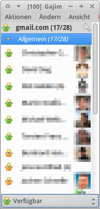
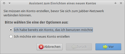
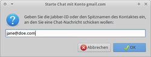
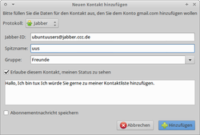
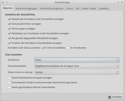
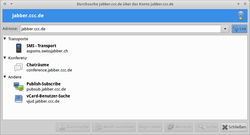
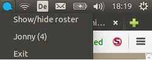
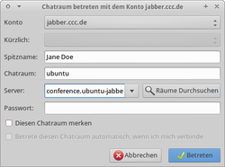
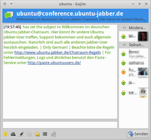
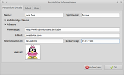

Gajim
Dieser Artikel wurde für die folgenden Ubuntu-Versionen getestet:
Ubuntu 16.04 Xenial Xerus
Ubuntu 14.04 Trusty Tahr
Zum Verständnis dieses Artikels sind folgende Seiten hilfreich:
Gajim  ist ein freier Software-Client für das Jabber- bzw. XMPP-Netzwerk. Das Ziel von Gajim ist, einen voll funktionsfähigen und einfach zu handhabenden XMPP-Client zur Verfügung zu stellen. Gajim funktioniert wunderbar unter GNOME, benötigt jedoch nur wenige Abhängigkeiten, so dass er auch auf Systemen ohne GNOME gut läuft.
ist ein freier Software-Client für das Jabber- bzw. XMPP-Netzwerk. Das Ziel von Gajim ist, einen voll funktionsfähigen und einfach zu handhabenden XMPP-Client zur Verfügung zu stellen. Gajim funktioniert wunderbar unter GNOME, benötigt jedoch nur wenige Abhängigkeiten, so dass er auch auf Systemen ohne GNOME gut läuft.
Gajim bietet u.a. Unterstützung für:

Chatfenster mit Tabs
Metakontakte
Raum-Lesezeichen
Emoticons und Avatare
Trayicon
Rechtschreibprüfung
erweiterte Log-Funktionen
Esession-Verschlüsselung
Unterstützung für Transporte (ICQ, AIM, MSN, …)
Installation¶
Zur Installation [1] ist folgendes Paket aus den offiziellen Paketquellen notwendig:
gajim (universe)
 mit apturl
mit apturl
Paketliste zum Kopieren:
sudo apt-get install gajim
sudo aptitude install gajim
Entwickler-Version¶
Die Installation aus dem Mercurial-Repository wird auf der Projektseite erläutert.
Hinweis!
Fremdsoftware kann das System gefährden.
Eine Paketquelle für Debian, welche auch unter Ubuntu funktioniert, kann alternativ eingebunden werden . Sie wird täglich aktualisiert, sofern es eine neue Version auf dem Mercurial-Server  gibt.
gibt.
Konto hinzufügen¶
Nach erfolgreicher Installation kann man gajim starten. [6]
Bevor man ein Konto anlegt, sollte man sich überlegen, was für einen XMPP-Server man nutzen möchte. Anhaltspunkte findet man beispielsweise im Wiki unter XMPP-Server. Auf dieser Liste sind die Erfahrungen der Benutzer von ubuntuusers hinterlegt. So kann man schnell einen brauchbaren XMPP-Server ausfindig machen.
Nun geht man wie folgt vor:

Über "Ändern -> Konten" gelangt man in einen Dialog in dem man die Konten, die Gajim nutzen soll, verwalten kann.
Über die Schaltfläche "Neu" kann man nun ein bereits bestehenden XMPP-Account zu Gajim hinzufügen oder gleich einen neuen Account auf einem Server erzeugen. Als Beispiel soll das Vorgehen bei "Ich möchte ein neues Konto erstellen" beschrieben werden. Dadurch wird ein neues Konto erzeugt.
Den "Benutzername" kann man frei wählen. Sollte er belegt sein, so wird man später gewarnt. Unter "Server" wählt man entweder einen bereits aufgelisteten Server aus oder trägt selber einen ein. Die JID - also
[mailto:benutzername@jabberserver.tld benutzername@jabberserver.tld]ergibt sich aus diesen beiden Optionen. Ein "Passwort" muss natürlich auch noch vergeben werden.Mittels "Vor" wird das Konto auf dem Server angelegt und man bekommt eine Bestätigung, dass das Konto erfolgreich angelegt werden konnte.
Das soeben eingerichtete Konto findet man in der Rubrik "Konten" wieder. Das Fenster "Konten" kann nun geschlossen werden. Um sich Einzuloggen muss man nur noch auf den Mond klicken (Abgemeldet) und "Angemeldet" auswählen. Schon wird die Verbindung mit dem Server hergestellt.
Im Fenster öffnet sich die Kontaktliste. Sofern man einen neuen Zugang hat, bleibt die Liste erst einmal leer. Falls man einen schon bestehenden Account hinzugefügt hat und die Daten korrekt eingegeben wurden, werden sofort nur die Kontakte angezeigt, die gerade online sind.
Chat starten¶

Um mit einer Person zu chatten muss man diese nicht zwangsläufig als Kontakt zu seiner Kontaktliste hinzufügen. Über "Aktionen -> Chat starten" kann man eine JID angeben, mit der man sich unterhalten möchte.
So kann man beispielsweise Unbekannte erst einmal ansprechen und sich bekannt machen, bevor man eine fremde Person um die Aufnahme in der Kontaktliste bittet. Solche Kontakte werden in der Kontaktliste unter "Nicht in der Liste" geführt. Natürlich sieht man nie, ob solch ein Kontakt online oder offline ist. Doch so bleibt die Privatsphäre beider Kontakte geschützt.
Kontakt hinzufügen¶

Einen neuen Kontakt kann man unter "Aktionen -> Kontakt hinzufügen..." zur Kontaktliste hinzufügen. Hier muss nur die "Benutzer-ID" (also die JID) eingetragen werden. Alternativ kann man individuell einen "Spitznamen" und eine "Gruppe" anlegen. Anstatt einer JID erscheint dann der Spitzname in der Kontaktliste.
Sobald man einen Kontakt hinzugefügt hat, bekommt dieser eine Nachricht, dass er der eigenen Liste hinzugefügt wurde. Wenn er dies erlaubt, "autorisiert" er dies, indem er den Nutzer freischaltet. Nun wird man ebenfalls zu dessen Kontaktliste hinzugefügt und muss dies ebenfalls bestätigen. Sollte etwas schief laufen, so kann man eine Autorisierungsanfrage mit einem Rechtsklick auf den Kontakt und dann unter "Abonnement" nachholen.
Einstellungen¶
Zahlreiche Konfigurationsmöglichkeiten findet man unter "Ändern -> Einstellungen". Hier kann man die zu nutzenden Symbole wählen, Themes auswählen, Statusmeldungen konfigurieren und vieles mehr. In der Lasche "Erweitert" findet man unter "Erweiterter Konfigurations-Editor" einen Editor, wo jede Einstellung des Programms geändert werden kann.

GNOME-Schlüsselbund¶
Seit der Version 0.11 verwendet Gajim standardmäßig den GNOME Schlüsselbund, um die Passwörter für die verschiedenen Accounts zu speichern. Will man dies abschalten, kann dies geändert werden, indem man unter "Ändern -> Einstellungen -> Erweitert -> Erweiterter Konfigurationseditor -> Öffnen..." den Wert "use_gnomekeyring" von Aktiviert durch einen Klick auf Deaktiviert setzt.
Automatisches Einloggen einrichten¶
Falls man mehrere XMPP-Accounts nutzt, möchte man eventuell nicht, dass sich Gajim automatisch in Accounts beim Start einloggt. Hat man beim Erstellen den Status beim Starten nicht schon angegeben, so kann man dies unter "Ändern -> Konten -> Konto auswählen -> Ändern -> Allgemein -> Beim Programmstart verbinden" nachträglich ändern.
Gesprächsmitschnitte¶
Um die Gespräche mit den unterschiedlichen Chatpartnern gegebenenfalls nochmals nachlesen zu können, empfiehlt es sich unter "Ändern -> Konten -> Konto auswählen -> Ändern -> Allgemein" die Option "Unterhaltungsverlauf für alle Kontakte speichern" zu aktivieren. Nun werden die Protokolle im Heimverzeichnis in der Datenbank ~/.gajim/logs.db gespeichert. Diese Einstellungen sollte jedoch Standard sein.
Ein Gesprächsprotokoll kann man öffnen, indem man einen Chat mit dem gewünschten Kontakt öffnet und dann unter "Aktionen -> Verlauf" den Gesprächsverlauf öffnet.
Abgemeldete Kontakte anzeigen¶
Normalerweise werden die Kontakte, die gerade nicht online sind, ausgeblendet. Um diese trotzdem anzuzeigen, um ihnen beispielsweise eine Nachricht zukommen zu lassen, sobald diese online gehen, kann man unter "Ansicht -> Abgemeldete Kontakte anzeigen" aktivieren. Offline-Kontakte werden nun ausgegraut in der Kontaktliste geführt.
Verschlüsselung¶

Client-Server¶
Gajim verwendet zur Kommunikation zwischen Client und dem XMPP-Server von Haus aus TLS (also die aktuelle Ausgabe von SSL) als Verschlüsselung. Sollte der Server diese Verschlüsselung nicht anbieten, so kann man unter "Ändern -> Konten -> Konto auswählen -> Ändern -> Verbindung -> SSL verwenden (veraltet)" auch Verschlüsselung via SSL aktivieren. Sollte der genutze XMPP-Server trotzdem TLS anbieten, so nutzt Gajim automatisch TLS, auch wenn diese Option aktiviert wurde.
Nachteil dieser Art von Verschlüsselung ist, dass sie nur bis zum Server reicht. Ob der Server nun zum Server des Kontakts ebenfalls verschlüsselt überträgt, darauf hat man keinen Einfluss. Ebenso könnte der Administrator eines der beteiligten Servers die Nachrichten mitlesen.
Client-Client¶
Sicherer - allerdings auch etwas umständlicher - ist es, "Client2Client-Verschlüsselung" einzusetzen. Gajim bietet drei Möglichkeiten, um die Kommunikation zwischen Chatpartnern zu verschlüsseln.
OpenPGP¶
Gajim verwendet die Software GnuPG für das OpenPGP-Protokoll. Um die Datenverschlüsselung von GnuPG zu nutzen, wählt man einen geeigneten Schlüssel unter "Ändern -> Konten -> Konto auswählen -> Ändern -> Persönliche Informationen -> Schlüssel wählen" aus dem eigenen GnuPG-Schlüsselbund aus.
Auch die öffentlichen Schlüssel der Kommunikationspartner müssen sich im GnuPG-Schlüsselbund befinden. Der passende lässt sich dann über den Kontextmenü-Eintrag (Rechtsklick auf den Kontakt) "OpenPGP-Schlüssel zuweisen" auswählen.
ESession¶
Gajim bietet mit ESession standardmäßig eine wenig verbreitete Verschlüsselung an. Diese Verschlüsselung hat den Vorteil, dass sie automatisch (ohne Zutun der Nutzer) aktiviert wird, sobald sich zwei Clients verbinden, die ESession unterstützen (ähnlich wie bei Off-the-Record Messaging, siehe unten). Im Chatfenster wird angezeigt, sobald die ESession-Verschlüsselung aktiv ist.
Somit wird die Kommunikation zwischen Gajim-Nutzern standardmäßig verschlüsselt. Allerdings wird man bei anderen Clients wahrscheinlich keine ESession-Unterstützung vorfinden. Demnach sollte man ggf. zusätzlich auch die OpenPGP-Verschlüsselung verwenden.
Off-The-Record¶
Neben OpenPGP und ESession beherrscht Gajim seit Version 0.15 (ab Ubuntu 12.04) mittels eines Plugins auch die Verschlüsselung via Off-The-Record (OTR). Hierzu muss man in den Einstellungen für Plugins den "Plugin Installer" aktivieren, in dem dann erscheinenden zweiten Reiter des Plugins-Fensters das Plugin "Off-The-Record Encryption" zur Installation ankreuzen und es nach dieser im ersten Reiter ebenfalls noch aktivieren. Danach steht einem im Chatfenster per Rechtsklick auf den Namen des Gesprächspartners ein Untermenü mit OTR-Funktionen zur Verfügung.
OMEMO¶
OMEMO ist eine Erweiterung des XMPP-Protokolls für das Axolotl-Protokoll. OMEMO steht für "OMEMO Multi-End Message and Object Encryption". Mittels dieses Protokolls ist es möglich, Nachrichten über Ende zu Ende verschlüsselte Verbindungen an mehrere Endgeräten zu synchronisieren, selbst wenn diese offline sind.
Dienste durchsuchen¶
 XMPP-Server bieten normalerweise mehr als nur die Kommunikation von Benutzer zu Benutzer über Dienste an. So besitzen manche Server die Fähigkeit, über Transports-Nachrichten aus XMPP heraus an anderen Instant-Messaging-Dienste zu leiten. Oder sie bieten Chaträume an, wo man sich mit mehreren Benutzern zur gleichen Zeit unterhalten kann. Manche bieten sogar die Möglichkeit, SMS-Nachrichten (gegen eine Gebühr) aus XMPP heraus zu verschicken und vieles mehr. Je nach XMPP-Server unterscheiden sich die Möglichkeiten. Die Dienste eines Server kann man über "Aktionen -> Dienste durchsuchen" auflisten lassen.
Transporte (ICQ, MSN, etc.)¶
Möchte man bspw. von ICQ auf XMPP umsteigen, aber dennoch seine alten Kontakte behalten, kann man die "Transport"-Funktion nutzen. Dies ermöglicht ICQ-Nachrichten in XMPP zu senden und empfangen. Dazu muss man sich bei einem ICQ-Transport registrieren, der aber nicht unbedingt auf demselben Server liegen muss wie der eigene XMPP-Account. Hier im Wiki gibt es eine Liste von Servern, die solche Dienste anbieten: XMPP/Server. Eine andere, etwas ältere Übersicht über sehr viele Server und deren Dienste, die u.U. nicht mehr auf dem neusten Stand ist, gibt es auf jabber.org .
Hat man einen Account erstellt und sich eingeloggt, gelangt man über "Aktionen -> Dienste durchsuchen" zu einer Übersicht der vom Server angebotenen Dienste. Wenn der eigene Server keinen passenden Transport anbietet, kann man natürlich auch jeden beliebigen anderen Server "durchsuchen". Hier muss der ICQ-Dienst ausgewählt werden. (bzw. der MSN-, Yahoo- oder sonstige Transport.) Nun kann man sich für den Dienst mit seinen alten ICQ-Daten registrieren. Ist das erledigt, kann man ICQ (fast) wie gewohnt über Gajim nutzen. Leider sind die Protokolle der proprietären Anbieter nicht öffentlich einsehbar und auch gelegentlich einem unangekündigten Wandel unterworfen, so dass es bei Details wie Abwesenheitsbenachrichtigungen, Dateitransfers, etc., zu Problemen kommen kann.
Plugins¶
Appindicator integration¶

Dieses Plugin zeigt im Panel eine kleine Sprechblase, die sich blau verfärbt, wenn man eine neue Nachricht bekommt. Sie zeigt, von wem man eine neue Nachricht bekommen hat und wie viele. Zusätzlich kann man die Gajim-Oberfläche über das Panel aufrufen, verstecken sowie Gajim beenden.
Gruppenchats (MUC)¶

Um mit vielen Menschen über das eine oder andere Thema zu sprechen, kann man Chatrooms aufsuchen. Der XMPP-Server muss dazu den Dienst "Konferenz" anbieten, was aber die meisten XMPP-Server können.
Um einen Gruppenchat (MUC, Multi-User Chat) zu betreten, gibt man die JID des Chats unter "Aktionen -> Gruppenchat -> Gruppenchat betreten" ein. Im Feld "Spitzname" gibt man einen Namen an, unter dem man in dem Chatraum sichtbar sein möchte. Dieser Name kann beliebig gewählt werden und ermöglicht es dem Benutzer, anonym zu bleiben.
Wählt man einen dem Server unbekannten Namen als Gruppenchat an, so wird sofort ein neuer Gruppenchat angelegt. Wählt man einen existierenden Gruppenchat, so tritt man automatisch diesem Chat bei. Das Feld "Passwort" wird nur gebraucht, wenn man einen neuen Chat mit einem Passwort vor dem Zutritt unautorisierter Teilnehmer schützen möchte oder eben für den Eintritt zum Chatraum ein Passwort benötigt.
Beispielsweise gibt es einen deutschsprachigen Ubuntu-Chatraum im XMPP-Netzwerk. Hier kann man Hilfe und Tipps rund um Ubuntu einholen.
Dateiversand¶
 Um eine Datei zu versenden, einen Rechtsklick auf den Kontakt ausführen, an den die Datei gesendet werden soll und im sich öffnenden Fenster "Datei senden" wählen. Abschließend eine Datei auswählen und mittels "Senden" absenden.
Feineinstellungen¶
Die restlichen aufgeführten Einstellungen beschränken sich auf wenige Aspekte, da eine detailliertere Beschreibung den Umfang der Seite sprengen würde. Bitte diese Funktionen selber austesten und ggf. unten stehenden Link besuchen.
Persönliche Informationen¶

Es besteht die Möglichkeit, persönliche Informationen, welche im XMPP-Netzwerk verfügbar sein sollen, zu veröffentlichen. Wer dies möchte, kann die Details unter "Ändern -> Konten -> Konto auswählen -> Ändern -> Persönliche Informationen -> Persönliche Details bearbeiten..." in den Reitern "Persönliche Details, Arbeit und Über" eingeben. Sinnvoll ist es hier, den "Spitznamen" zu setzen sowie einen Avatar.
Avatar setzen¶
Einen Avatar setzt man wie folgt: "Ändern -> Konten -> Konto auswählen -> Ändern -> Persönliche Details -> Persönliche Details bearbeiten... -> Über -> Avatar wählen". Nun nur noch veröffentlichen - Fertig!
Klänge ändern¶
Unter "Ändern -> Einstellungen -> Ereignisse" kann eingestellt werden, ob Systemklänge abgespielt werden sollen oder nicht. Außerdem können den verschiedenen Ereignissen ein eigener Sound zugewiesen werden. Das Feld "Player" ist bei Problemen auf den Eintrag aplay -q zu überprüfen.
Es ist empfehlenswert, im Heimverzeichnis einen Ordner sounds zu erstellen um dort die Wave-Dateien abzuspeichern. Um ihn im Dateimanager auszublenden, kann dem Ordnernamen einen Punkt voransetzen (.sounds) und damit zu einem versteckten Ordner machen.
Viele Themes findet man beispielsweise auf gnome-look.org .
Bei der Verwendung von PulseAudio (Standard außer bei Lubuntu sollte man unter "Player" den Eintrag aplay -q auf paplay setzen.
Mehrfachanmeldung¶
Eine sinnvolle Sache ist, dass es unter XMPP möglich ist, sich mehrfach mit der eigenen JID im Netzwerk anzumelden. "Priorität" und "Ressourcen" heißen hier die Zauberwörter. So kann zum Beispiel zu Hause mit der Ressource "Gaim" und der "Priorität 5" mit dem Netzwerk verbunden sein. Ist man mit einem Notebook an einem Hotspot unterwegs, kann mit der Ressource "Notebook" und der "Priorität 7" verbunden sein. Die Ressource mit dem höheren Wert bekommt die Nachricht dann als erstes zugestellt. Einstellen kann man diese Option unter: "Ändern -> Konten -> Konto auswählen -> Ändern -> Konto".
Während die Priorität bei mehreren angemeldeten Clients dieselbe sein kann, was zu einer zufälligen Adressierung der Meldungen zum einen oder anderen Client führt, müssen die Ressourcen sich unterscheiden, damit der XMPP-Server auch die beiden Clients unterscheiden kann. Die Priorität wird dagegen von Gajim per Voreinstellung sogar automatisch verwaltet, indem sie je nach Anwesenheits-Status herauf- oder herabgesetzt wird.
Zeroconf/Avahi¶
Seit Version 0.11 bietet Gajim die Möglichkeit, über Avahi auch ohne Server bzw. Internetverbindung mit Kontakten im LAN zu chatten. Dabei nutzt Gajim das Zeroconf-Protokoll, um potentielle Chatpartner zu finden. Das funktioniert völlig unabhängig von der Kontaktliste. Man kann also alle Benutzer im lokalen Netz automatisch sehen, ohne JIDs hinzuzufügen.
Damit man diese Funktionalität nutzen kann, muss unbedingt das folgende Paket installiert sein. Ansonsten gibt es zwar keine Fehlermeldung, aber die entsprechende Option lässt sich nicht anwählen.
python-avahi (universe)
mit apturl
Paketliste zum Kopieren:
sudo apt-get install python-avahi
sudo aptitude install python-avahi
Nun muss man nur noch im Konten-Editor unter "Ändern -> Konten" die Option "Kontakte im LAN anzeigen" setzen. In der Kontaktliste erscheint jetzt ein neuer Abschnitt namens "Local", unter dem automatisch alle anderen lokalen Benutzer auftauchen, die diese Option ebenfalls aktiviert haben. Mit diesen kann man nun ganz normal chatten, wie man es bei XMPP gewöhnt ist. Auch Dateiübertragungen funktionieren.
Leider unterstützen noch nicht alle XMPP-Clients dieses Protokoll. Das unter Ubuntu vorinstallierte Pidgin tut es aber, ebenso wie iChat von Apple.
Tastenkürzel¶
| Nützliche Tastenkürzel in Gajim | |
| Tastenkürzel | Funktion |
| Strg + O | An/abgemeldete Kontakte anzeigen |
| Strg + Q | Beenden |
| Strg + A | Konten |
| Strg + T | Dateitransfer |
| Strg + P | Einstellungen |
gajim-remote¶
Experten-Info:
Der folgende Abschnitt ist an erfahrenere Benutzer gerichtet, die sich auch auf der Kommandozeile auskennen und alle Möglichkeiten ausreizen wollen. Für den normalen Betrieb von Gajim sind diese Informationen nicht notwendig.
Gajim stellt nicht nur die grafische Oberfläche zur Verfügung, sondern lässt sich mit Hilfe des Programms gajim-remote auch von der Kommandozeile fernsteuern. Damit lässt sich Gajim u.a. sehr leicht in eigene Skripte integrieren. Auch das Anlegen von Panel-Objekten, die bestimmte Aufgaben per Mausklick erledigen, ist auf diese Art möglich.
gajim-remote verlangt immer mindestens ein Argument, das den genauen Befehl darstellt, und abhängig vom Befehl evtl. noch ein oder mehrere Parameter. Eine Übersicht über die unterstützten Befehle erhält man mit
gajim-remote help
Die genaue Syntax eines bestimmten Befehls ermittelt man mit:
gajim-remote help befehlsname
Beispiel¶
Hier ein Beispiel, wie man gajim-remote in der Praxis benutzen kann, wenn der Server mal nicht mehr verfügbar ist und man deswegen alle Kontakte auf einen neuen Account umziehen muss. Dazu muss man wissen, dass Gajim im Verzeichnis ~/.gajim/vcards für jeden Kontakt eine Datei anlegt, die aus der JID des Kontakts mit einem "-" am Ende besteht. Man sichert also als erstes die JIDs mit dem folgenden Befehl in eine Datei
ls -1 ~/.gajim/vcards | sed -e 's/-$//' > ~/kontakte.txt
Dann meldet man sich an einem anderen Server an, und addiert die alten Kontakte zu seinem Roster:
for a in $(cat ~/kontakte.txt); do gajim-remote add_contact $a; done
Evtl. muss man die Datei mit den JIDs vorher noch kurz von solchen Einträgen bereinigen, zu denen man den Kontakt abgebrochen hat. Die entsprechenden Dateien werden von Gajim nämlich nicht gelöscht. Die übrigen Kontakte erhalten jetzt natürlich alle erstmal eine neue Authorisierungsanfrage. Man muss sich deswegen etwas gedulden.
Problembehebung¶
Zertifikat passt nicht zur Domain¶
Wenn sich Gajim beschwert, dass das vom Server verwendete Zertifikat nicht zu dessen Domain passt, kann es am fehlenden Paket python-pyasn1 liegen. Dieses kann man einfach nachinstallieren:
python-pyasn1
mit apturl
Paketliste zum Kopieren:
sudo apt-get install python-pyasn1
sudo aptitude install python-pyasn1
Lokales Herausgeberzertifikat fehlt¶
Gajim nutzt die Herausgeberzertifikate (CA-Zertifikate) der folgenden Speicherorte:
Das Verzeichnis /etc/ssl/certs/ (Links auf die Systemzertifikate, u.a. des Pakets ca-certificates)
Die Datei /etc/ssl/certs/ca-certificates.crt (die Systemzertifikate in einer Datei)
Das Verzeichnis /usr/local/share/ca-certificates/ (selbst nachinstallierte Systemzertifikate)
Die Datei /usr/share/gajim/data/other/cacerts.pem (nur für Gajim selbst wirksam)
Sollte der angewählte XMPP-Server ein Zertifikat verwenden, für dessen Herausgeber kein CA-Zertifikat an mindestens einem der genannten Orte vorliegt, kann Gajim die Vertrauenswürdigkeit des Server-Zertifikat nicht überprüfen. Es erscheint die Fehlermeldung, dass "das lokale Herausgeberzertifikat fehlt", mit der Auswahl, trotzdem eine verschlüsselte Verbindung mit dem ungeprüften Zertifikat aufzubauen oder den Verbindungsversuch abzubrechen.
Ein ungeprüftes Server-Zertifikat könnte von einem Mittelsmann gefälscht sein, daher ist die Installation des passenden CA-Zertifikats sinnvoll. Hierzu gibt es zwei Möglichkeiten, die im Folgenden am Beispiel der seit Ubuntu 13.10 aus Sicherheitsbedenken entfernten Zertifikate root.crt und class3.crt des populären Herausgebers CAcert demonstriert werden:
Die CA-Zertifikate werden in einem passend benannten Unterverzeichnis von /usr/local/share/ca-certificates/ abgespeichert und anschließend die Systemzertifikate aktualisiert. Am einfachsten geht dies im Terminal:
sudo mkdir /usr/local/share/ca-certificates/cacert.org sudo wget -P /usr/local/share/ca-certificates/cacert.org http://www.cacert.org/certs/root.crt http://www.cacert.org/certs/class3.crt sudo update-ca-certificates
Dieses Vorgehen sorgt dafür, dass die CA-Zertifikate systemweit funktionieren.
Man trägt die Zertifikate Class 1 und Class 3 (PEM-Format
 ) im Klartext von Hand in die Datei /usr/share/gajim/data/other/cacerts.pem ein. Falls die Datei noch nicht existiert, legt man sie zu diesem Zweck neu an. Dazu werden Administratorrechte benötigt.
) im Klartext von Hand in die Datei /usr/share/gajim/data/other/cacerts.pem ein. Falls die Datei noch nicht existiert, legt man sie zu diesem Zweck neu an. Dazu werden Administratorrechte benötigt.
 - Übersicht zu XMPP (Jabber)
- Übersicht zu XMPP (Jabber)- Erstellt mit Inyoka
-
 2004 – 2017 ubuntuusers.de • Einige Rechte vorbehalten
2004 – 2017 ubuntuusers.de • Einige Rechte vorbehalten
Lizenz • Kontakt • Datenschutz • Impressum • Serverstatus -
Serverhousing gespendet von